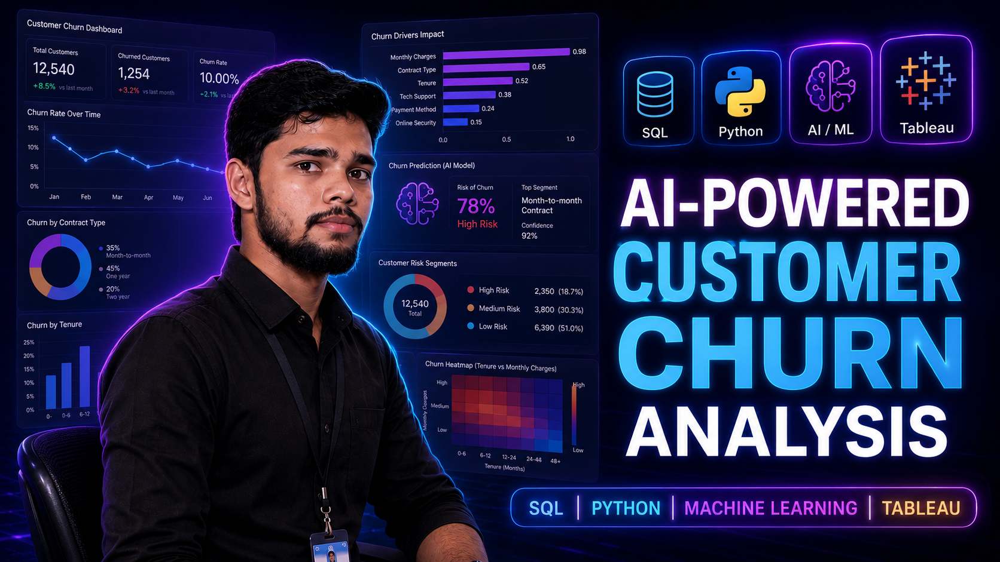

Data Analyst Portfolio
Available for Freelance ProjectsAyush Rajput
Data Analyst
Turning Data into Actionable Insights
B.S. Data Science student at IIT Madras with hands-on experience in Power BI, SQL, Python and Excel. I help businesses turn raw data into clear dashboards, actionable insights, and smarter decisions. Available for freelance projects and open to Data Analyst opportunities.
About Me
IIT Madras Data Science student building real-world analytics experience
I am Ayush Rajput, a Data Science student at IIT Madras with a strong interest in Data Analytics, Business Intelligence, Artificial Intelligence, and Full-Stack Development. I enjoy transforming real-world problems into practical solutions using Python, SQL, Power BI, FastAPI, and React. Recently, I built an AI Recruiter Agent by converting a hackathon challenge into a live AI-powered recruitment platform capable of candidate ranking, resume analysis, interview question generation, and hiring recommendations. My goal is to create impactful products that combine data, AI, and software engineering to solve business problems efficiently.
With 12+ projects on GitHub spanning Power BI dashboards, SQL analysis, Python EDA, and Excel automation — I focus on turning messy data into clear, decision-ready insights. My roadmap: grow from Data Analyst to Data Scientist and eventually AI/ML Engineer.
12+
Data Analytics Projects
1
Live AI Product
100K+
Profiles Processed
IITM
BS Data Science
Skills & Tools
Modern analytics toolkit for reporting, exploration, and decision support
A focused stack for cleaning, analyzing, visualizing, and communicating data in business-friendly ways.
Python
Used for data cleaning, transformation, exploratory analysis, and workflow automation.
SQL
Writing efficient queries to extract insights, analyze trends, and answer business questions.
Excel
Advanced spreadsheet analysis, formulas, pivot tables, and reporting for fast operational work.
Power BI
Building interactive dashboards, KPI views, and executive-ready business intelligence reporting.
Tableau
Creating clean visual stories, trend exploration layouts, and stakeholder-friendly data views.
Pandas / NumPy
Handling structured datasets efficiently for preprocessing, transformation, and numerical analysis.
Projects
Analytics work built around real reporting, segmentation, and decision-making use cases
Real-world projects built around dashboards, SQL analysis, Python workflows, and business storytelling.
AI Recruiter Agent
Built an end-to-end AI-powered recruitment platform that ranks candidates, analyzes resumes, generates interview questions, provides explainable AI recommendations, and supports recruiter hiring decisions using FastAPI, React.js, and Python.
Python
FastAPI
React.js
Pandas
Explainable AI

AI-Powered Customer Churn Analysis
Built an end-to-end customer churn analysis project using SQL, Python, Machine Learning, and Tableau with interactive dashboards and business-driven insights.
Python
SQL
Machine Learning
Tableau
View Project

Retail Sales & Profitability Dashboard
Advanced SQL + Power BI dashboard analyzing retail sales trends, profit margins, and category-level performance with interactive filters.
Power BI
SQL
DAX
View Project

Sales Data End-to-End Analysis
Complete sales data pipeline using Excel Macros — from raw data cleaning to automated reporting dashboard with business insights.
Excel
Macros
Dashboard
View Project

Attendance Tracker Dashboard
Interactive Power BI + Excel dashboard to track attendance patterns, identify trends, and generate automated summary reports.
Power BI
Excel
DAX
View Project

Weather with API Dashboard
Real-time weather analytics dashboard built using live API integration — displays live data, trends, and location-based weather insights.
Power BI
REST API
Real-time
View Project

Netflix Data Analysis
Exploratory data analysis on Netflix dataset — uncovering content trends, genre distributions, release patterns, and viewer insights.
Python
EDA
Excel
View Project

Stock Market Financial Analysis
Financial trends analysis on stock market data — identifying price movements, volatility patterns, and sector-level performance insights.
Excel
Finance
EDA
View Project
Certifications
Verified credentials that support real analytics work
Industry-recognized certifications in Data Science, Python, AI, and Excel.
Python for Data Science
Issued by IBM — covers Python programming, data analysis, and visualization fundamentals.
IBMData Science & Analytics
Issued by HP LIFE — covers data science workflow, business analytics, and decision-making with data.
HP LIFEGenerative AI
Issued by LinkedIn Learning — covers AI fundamentals, generative models, and practical AI applications.
LinkedIn LearningAdvanced Excel
Issued by STP Computer Education — covers advanced formulas, pivot tables, macros, and reporting.
STP EducationWeb Development
Issued by STP Computer Education — covers HTML, CSS, JavaScript fundamentals and web basics.
STP EducationB.S. Data Science
Currently pursuing Bachelor of Science in Data Science & Applications from IIT Madras (2025–Present).
IIT MadrasServices
Data analysis services tailored for decision-making, clarity, and growth
Structured support across the analytics workflow, from raw data preparation to insight delivery.

Data Cleaning & Preprocessing
Prepare raw data for analysis by fixing quality issues, handling missing values, and structuring reliable datasets.

Exploratory Data Analysis (EDA)
Uncover patterns, trends, anomalies, and key relationships that support smarter business decisions.

Data Visualization
Create clear and modern charts that make complex insights easier to understand and communicate.

Dashboard Development
Build interactive dashboards in Power BI or Tableau for KPI monitoring, reporting, and trend analysis.

SQL Data Analysis
Use SQL to answer business questions, analyze transactions, and extract meaningful operational insights.

Business Insights
Translate analytical results into practical recommendations that support strategy, growth, and performance improvement.
Contact
Let’s talk about how data can support better decisions
If you need dashboard development, data analysis support, or business insights for a project, send a message and I’ll respond as soon as possible.